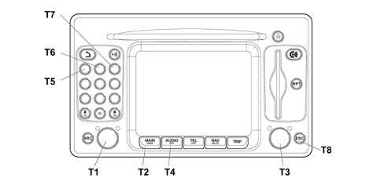

5580PE CHECK OPERATION OF CONNECT GPS AERIAL
- Path
- Test > 55 ELECTRICAL EQUIPMENT > 5580 SPECIAL ACCESSORIES > 5580P CONNECT PANEL > 5580PE CHECK OPERATION OF CONNECT GPS AERIAL
- Kind
- test / check procedure
- Applies to
- engines: 2.0 16V; all production periods
- Interactive page
- https://sloeber94.github.io/elrnDB-fDct/en/#/244000592
Applies to: engines: 2.0 16V; all production periods

Foreword.
Even if the Connect radio function is faulty, treat the radio as if it is working (tuned to a radio station with audible sound).
Proceed as follows to gain access to internal diagnostics:
- accendere il Connect, premendo il tasto/manopola sinistro (T1).
- sullo schermo in ambiente AUDIO non deve comparire la scritta AUDIO OFF.
- premere il tasto MAIN (T2).
- premere il tasto/manopola destro (T3) per visualizzare il menù principale
- premere il tasto AUDIO (T4) per alcuni secondi finché appare la scritta "AUDIO OFF"
- inserire la password di assistenza premendo in sequenza i tasti numerati 1-2-3 (T5, T6, T7)
- premere il tasto/manopola destro (T3) per conferma
This will provide acess to the Service menu:
- utilizzare il tasto/manopola (T3) per spostarsi con il cursore sino ad attivare l´ambiente "Assistenza"
- confermare premendo il tasto/manopola destro (T3)
Turn knob (T3) to select the EOL Diagnostics menu and press the key to confirm the choice
The EOL Diagnostics menu consists of:
- N° Disegno
- Luci
- Retromarcia
- Odometro esterno
- Casse
- Antenna GPS: indica lo stato del collegamento fisico dell´antenna AM/FM (assorbimento elettrico dell´amplificatore d´antenna). In un´area vicina viene indicato con il colore verde che non sono riscontrate anomalie, mentre il colore rosso indica presenza di problemi.
- Antenna AM/FM
- Errore interno: fornisce informazioni sullo stato degli errori interni al sistema. Viene indicato in un´area vicina che cambia colore: dove il colore verde indica errore assente, mentre il colore rosso indica errore presente.
- Tasto CLEAR ERROR MEMORY Questa funzione è attiva con chiave su marcia, premendo la manopola (T3) attiverà la procedura di cancellazione della memoria errori. La cancellazione della memoria avviene dopo la fase di chiave su stop/chiave su marcia. Gli errori ancora presenti saranno effettivamente presenti in quell´istante.
Turn knob (T3) to select Diagnostics mode and press the knob to confirm the choice. Further submenus can be selected within this menu to continue self-diagnosis:
- GSM
- Radio
- GPS
- Input
- Navigazione
- Status and Dati
Menu: Service/Diagnostics/GPS
The following are displayed in the GPS submenu:
- Antenna: indica lo stato del collegamento con antenna GPS, in un´area vicina il colore verde indica che non ci sono anomalie riscontrate, mentre il colore rosso indica presenza di problemi.
- Ricevitore: Indica lo stato di collegamento con il ricevitore GPS, in un´area vicina il colore verde indica che non ci sono anomalie riscontrate, mentre il colore rosso indica presenza di problemi.
- Rapporto S/N: Indica il livello del rapporto segnale /rumore, in un´area vicina il colore verde indica che non ci sono anomalie, mentre il colore rosso indica presenza di problemi
- Numero satelliti: Indica il numero di satelliti captati dal Connect: il colore dello sfondo indica visivamente la qualità del segnale. (in un´area vicina il colore verde indica che non ci sono anomalie riscontrate, la stessa area di colore giallo indica che esiste una non buona qualità del segnale, mentre il colore rosso indica presenza di problemi).
- Versione SW: Indica il numero della versione software del modulo GPS.
Menu: Service/Diagnostics/Status and Date
The Status and Date menu consists of:
- Dati EEPROM
- Identification option
- DTC
This submenu is present but is not used for this test.